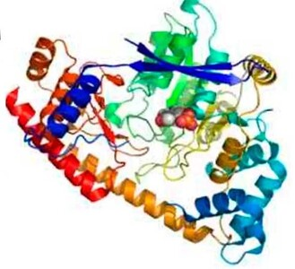

Функции:
Данный фермент участвует в преобразовании аспарата в ШУК с помощью переаминирования.
Локализация:
Его можно обнаружить помимо клеток печени в клетках миокарда, скелетной мускулатуры, почках и поджелудочной железе. Для определения патологии печени биохимическим методом анализа крови в приоритете его содержание в крови.
В патологии:
Является менее специфичным ферментом, т.к. большая часть АЛТ, в отличие от АСТ, содержится в гепатоцитах. Отчасти этим можно объяснить корреляцию между коэффициентом Ритиса и предположением локализации патологии. АСТ является цитоплазматически – митохондриальным ферментом, его повышение позволяет заподозрить более глубокое повреждение гепатоцитов.
Соотношение АСТ/АЛТ (Коэффициент Ритиса) 1,5 является нормой. При соотношении <1 можно заподозрить большинство заболеваний печени, например, вирусный гепатит, однако при алкогольных циррозах печени соотношение может быть >2. Следует отметить, что коэффициент Ритиса имеет значение при увеличении активности трансфераз в целом. Норма трансаминаз составляет 40 МЕ/л.
При увеличении трансаминаз (более 500 МЕ/л) можно предположить гепатит:
При меньшей степени повышения трансаминаз (до 500 МЕ/л) наблюдаются:
При повышении ферментов (до 300 МЕ/л) могут наблюдаться при следующих заболеваниях:
Показатели одних трансфераз не дают исчерпывающих данных о том, какое конкретно заболевание печени наблюдается у пациента, и является это заболеванием печени вовсе. Так при хроническом гепатите C соотношение АСТ/АЛТ будет в пределах нормы, как их содержание в крови человека. При содержании аминотрансфераз в норме могут наблюдаться такие заболевания как:
Следует отметить, что при механической и паренхиматозной желтухе уровень АЛТ и АСТ значительно повышен, это происходит вследствие того же синдрома цитолиза.